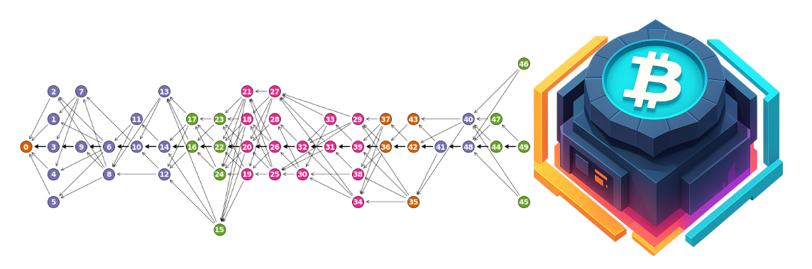

SoB '25: Diving Deep in the Bitcoin World
A little bit about Myself:
Hey everyone, I'm Aritra, a senior pursuing Master's degree in
Computer Science from Chennai Mathematical Institute. I have
completed my B.E. degree in Electrical Engineering from Jadavpur
University. I'm passionate about math, physics, and computer
science, and I'm currently diving deep into cryptography, bitcoin,
and complexity theory. I have done GSoC twice with
Mathesar
(2023) and
omegaUp
(2024).
Besides, I spend my leisure time playing football,
watching soccer matches (I'm a Madridista), anime and reading
mangas.
If you want to know me better, you might want to visit
my
LinkedIn profile,
GitHub profile
or go through my portfolio. There you
will find numerous ways to get in touch with me. I will be writing
more blogs on SoB, you can find them
here.
What is SoB?
Summer of Bitcoin is a global, online summer internship program focused on introducing university students to bitcoin open-source development and design. I will briefly explain the selection process of SoB.
- First, you need to apply for the programme here. (Deadline was February 15 for 2025.)
- Note that, there are two tracks, Developer and Design. You need to select one of them. I selected the Developer track.
- After applying, you will be notified about the selection process and the timeline. You'll also receive a few study materials.
- Then You will be invited to participate in an intensive, hands-on bootcamp. Remember that, there will be weekly challenges and they will require you to dive deeper into the bitcoin world. Along with the course contents, I would suggest you to go through the following materials:
- You need to successfully complete all 4 challenges to get selected for the proposal round. (In our case, we needed to complete 3 challenges.)
-
Once the proposal round kicks off, you will get a list of the
organizations and their projects.
- You should go through all the projects and select a few that matches your tech stack.
- You should also join the public communication channels of the organizations and start discussing the projects with the mentors and the competitors.
- Next, if possible, go through the codebase and try to understand the relevant part of the codebase.
- After this, you should start writing the proposal. If the mentors allow, get it reviewed by them before the final submission.
- Soon after the proposal round, you'll get to know the verdict of the proposal.

My Introduction to Braidpool:
While going through the projects, I found a few that matched my tech
stack. Committed Mempool of the organization
Braidpool was one of them. Apart from that, the
codebase was written in Rust, Python (and would need CPP), which I
was familiar with.
So, first I will introduce Braidpool.
Braidpool
is a scalable peer to peer bitcoin mining pool with support for
hashrate futures. If you want to know more about it, you can check
out the
project readme
and the
consensus algorithm.
Braidpool's discord channel is super active. Once joined, Bob (the
maintainer and the mentor) was very helpful and supportive
explaining the project. He guided me through the codebase and helped
me understand the relevant parts. I even went through a few papers
to understand how
Braidpool would work and how
BlockDAG is an improvement over traditional
Blockchain. I also had a few discussions with the
community members to gain more insights.
Soon, we started contributing to the codebase. I started with a few
small issues and then moved on to the Braidpool V1 implementation.
It was a great experience and I have already learned a lot about the
bitcoin world. You can access my proposal
here. Next, I will briefly explain the project.
Braidpool V1 + Committed Mempool:
The project aims to introduce a decentralized mining pool
(Braidpool) which is based on BlockDAG, not the traditional
BlockChain. The project also focuses on introducing a committed
mempool to accommodate the higher frequency beads (weak blocks)
submission.
A share is a "weak block" that is defined as a standard bitcoin
block that does not meet bitcoin's target difficulty, but does meet
some lesser difficulty target.
The share is itself a bearer proof that approximately w=1/x sha256
computations have been done. The share data structure has additional
data that indicates to other miners that the share belongs to
Braidpool, and if it had met bitcoin's difficulty target, it
contains commitments such that all other miners in the pool would be
paid according to the share tally. A Bead looks like the following
structure:
pub struct CommittedMetadata {
pub transaction_cnt: u32,
pub transactions: Vec<Transaction>,
pub parents: HashSet<BeadHash>,
pub payout_address: P2P_Address,
pub start_timestamp: Time,
pub comm_pub_key: PublicKey,
pub miner_ip: AddrV2,
}
pub struct UnCommittedMetadata {
pub extra_nonce: i32,
pub broadcast_timestamp: Time,
pub signature: Signature,
pub parent_bead_timestamps: TimeVec,
}
pub struct Bead {
pub block_header: BlockHeader,
pub committed_metadata: CommittedMetadata,
pub uncommitted_metadata: UnCommittedMetadata,
}
- The Committed Mempool is a second mempool within bitcoind that contains only transactions committed within Braidpool shares (beads).
- A bead (or share) is a "weak block"—a standard bitcoin block that does not meet bitcoin's target difficulty, but does meet a lesser difficulty target.
- Beads are created much more frequently than bitcoin blocks, which would require transmitting a full bitcoin block (about 4MB) several times per second to all nodes—creating huge bandwidth and processing overhead.
- The Committed Mempool solves this by making the block template independently computable, so only a few kilobytes of data need to be transmitted.
- On average, a bitcoin block has about 3810 transactions. If the bead difficulty is set to 1/1000th of bitcoin's, there will be 1000 beads per bitcoin block, so each bead should add about 5 transactions.
- At any time, the committed mempool holds all transactions that have been added to at least one bead but are not yet in the bitcoin blockchain.
- To get all transactions for a bead, a deterministic algorithm (getBlockTemplate) runs on the committed mempool, producing a set of valid, non-conflicting transactions. The bead then adds its chosen ~5 transactions to this set and calculates the merkle root.
- Because the algorithm is deterministic, the bead only needs to include the transactions it chose itself, not all transactions.
- Using the committed mempool, the block size is reduced to a few kilobytes, making transmission across the network much more efficient.
- However, this requires an additional algorithm that will take a light-weight bead and convert it to a bitcoin block.
Thanksgiving:
All of these wouldn't be possible without the support of my parents,
friends and teachers. I'm thankful to them.
I am immensely grateful to Nandini for supporting me throughout.
I would like to thank Bob for his excellent mentoring. It was
way easier to dive deeper with all his help and support. Lastly, I
would like to thank all the co-contributors Ansh, Calisto, Abdullah,
Mohd, Abhishek, Priya, David and Keshav. With them, it was always
fun to discuss and brainstorm ideas.
P.S. The character in the background is
Eren Yeager from the anime "Attack on Titan" and the quote is from him too. The character from the gif is
Makima from the anime "Chainsaw Man".